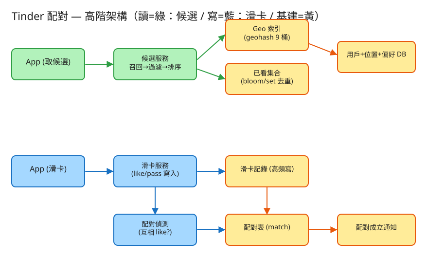

G 搜尋/索引 建議 45 分鐘 Design Tinder / Matching
like（喜歡）或 pass（略過），逐一記錄。| 指標 | 假設 | 推算 |
|---|---|---|
| 使用者數 | 全球活躍 | ~1 億 MAU、~1000 萬 DAU |
| 每人每日滑卡 | 平均 ~100 張 | 1000萬 × 100 = 10 億滑卡/日 ≈ ~11.5k 寫 QPS（峰值 ×5 ≈ 58k） |
| 取候選（讀） | 每滑一疊（~20 張）拉一次 | 10億/20 = 5000 萬次/日 ≈ ~580 讀 QPS（峰值 ×5 ≈ 3k） |
| 配對率 | like 中約 ~1% 雙向命中 | 遠少於滑卡量；配對寫入相對稀疏 |
| 每筆滑卡 | from/to/action/ts ~50 bytes | 10億/日 × 50B × 90 天 ≈ 4.5 TB（時序/列式儲存） |
| geohash 精度 6 | 格子 ≈ 1.2km × 0.6km | 市區一格內可數百～數千人，適合粗篩 |
# 取候選堆疊（讀，高頻）— geohash 召回 + 偏好過濾 + 去重 + 排序
GET /api/v1/candidates?user=u_alice&limit=20
→ 200 { "candidates": [ { "id":"u_henry", "distance_km":0.02, "likes_me":false }, ... ],
"buckets_scanned": ["wsqqqm", ...9 桶], "recalled": 6 }
# 滑卡（寫，超高頻）— 記錄 like/pass；雙向 like 觸發 match
POST /api/v1/swipe
Body: { "from":"u_alice", "to":"u_bob", "action":"like" }
→ 200 { "recorded":true, "matched":true, "match":{ "pair":"u_alice|u_bob" } }
# 我的配對（讀）
GET /api/v1/matches?user=u_alice → { "matches":[ { "with":"u_bob", ... } ] }
# 更新偏好 / 位置（寫，低頻）— 需重算 geo 桶 + 失效候選快取
PATCH /api/v1/users/{id} Body: { "lat":.., "lng":.., "pref_gender":"M", "age_min":25, "age_max":35, "max_km":10 }
distance_km（隱私）。滑卡用 (from,to) 唯一，重送同一張視為冪等（不重覆記錄）。users (主庫：讀多寫少；位置/偏好偶爾更新)
id VARCHAR PRIMARY KEY
gender CHAR(1) -- M / F
age INT
lat, lng DOUBLE -- 位置
geohash CHAR(8) -- 預存索引鍵（地理召回）
pref_gender CHAR(1) -- 想看：M / F / A(全部)
age_min, age_max INT -- 年齡偏好
max_km DOUBLE -- 最大距離偏好
INDEX (geohash)
swipes (高頻 append-only → 走分片 / 時序庫，不放主庫熱路徑)
from_id, to_id, action(like|pass), ts
PRIMARY KEY (from_id, to_id) -- 同一對只一筆（冪等去重）
matches (互相 like 後產生；稀疏)
pair_key VARCHAR PRIMARY KEY -- min(a,b)|max(a,b) 正規化，A-B 與 B-A 同一筆
a, b, ts
seen_set (已看 / 已滑過 → 候選去重)
user_id → bloom filter / Redis set -- 可由 swipes 推導，亦可獨立快取(to,from,like) 是否存在」；③ 已看集合 = 凡 from=我 的所有 to。一張表同時支撐配對偵測與去重。
✏️ 用 Excalidraw 開啟編輯（diagram.excalidraw） 讀(取候選) ─▶ 候選服務 ──┬─▶ Geo 索引(geohash 9 桶: 中心格+8鄰格) ──▶ 用戶+位置+偏好 DB
│ （召回附近的人） （雙向偏好過濾 + 排序）
└─▶ 已看集合(bloom/set) ── 去重：看過/滑過的剔除
寫(滑卡) ──▶ 滑卡服務 ──▶ 滑卡記錄(高頻寫) ──▶ 配對偵測(互相 like?) ─▶ 配對表 ─▶ 配對成立通知交友的第一步是「找附近的人」。把每個使用者的座標預先編成 geohash，查詢者只要算出自己的 geohash，取中心格 + 周圍 8 鄰格共 9 桶，就拿到地理就近的候選池。這與「附近的人 / Yelp」完全同一套空間索引——只是這裡桶裡裝的是「人」而非「商家」。
召回後要過濾，而且是雙向的：
pref_gender、年齡 ∈ 我的 [age_min,age_max]、距離 ≤ 我的 max_km。雙向過濾把「不可能配成」的對提前剔除，省下滑卡與配對偵測的成本，也提升候選品質。
滑卡是這題最大的寫壓力（每人每天上百張，全站每秒上萬筆）。對策：
from_id 分片，水平擴展寫入。核心判斷：A like B 時，查 swipes 是否已有「B → A 且 like」這筆。
swipe(A → B, like):
記錄 (A,B,like)
if exists(B → A, like): # 對方之前已 like 我
match = ensure_match(A, B) # pair_key = min|max 去重
notify both用「A 對 B」「B 對 A」兩筆滑卡判斷雙向，比維護一張「誰喜歡誰」的雙向關係表更簡單；配對表用正規化 pair_key（排序後串接）確保 A-B 與 B-A 只存一筆。
使用者滑過的人不該再出現。已看集合 = 凡 from=我 的所有 to。規模大時每人存一個 Redis set 或 bloom filter（容忍極小誤判換取記憶體），候選召回後逐一比對剔除。這正是呼應爬蟲 frontier 去重的同一招：用集合擋掉「已處理過」的項目。
候選不只「附近 + 符合偏好」就好，排序決定先看到誰：
| 瓶頸 | 問題 | 對策 |
|---|---|---|
| 熱門用戶被滑爆 | 少數人收到海量 like，曝光集中 | 曝光配額 / 限流；排序降權已爆量者，提升長尾曝光（公平） |
| 滑卡寫入量 | 每秒上萬筆 append | 依 from_id 分片；Kafka 緩衝；pass 批次落盤，like 即時 |
| 候選新鮮度 | 滑完一區就沒人了 / 新用戶看不到 | 放大 geohash 範圍（降精度）+ 混入新用戶 + 候選快取設短 TTL |
| 已看集合膨脹 | 滑很多後集合很大 | bloom filter 壓記憶體；或只保留近期 N 天 |
| 取候選延遲 | 每次重算召回+過濾 | 預算（pre-compute）候選堆疊快取，背景刷新 |
(from,to) 主鍵冪等。本題 demo 著重於配對系統的核心邏輯（也是面試真正的考點），可實際用 PHP 內建伺服器跑起來：
src/GeoHash.php 經緯度 ↔ base32 geohash 編解碼 + neighbors()（中心格 + 8 鄰格）+ haversine。與「附近的人 ⑱」共用的地理召回基礎。src/MatchEngine.php 候選產生（geohash 召回 → 雙向偏好過濾 → 去重 → 排序）+ 配對偵測（互相 like）。src/Store.php 使用者 / 滑卡（高頻 append）/ 配對 / 已看集合（JSON 檔 + flock 模擬 DB）。public/index.php 路由：取候選 / 滑卡 / 看配對，並附深色測試頁。# 啟動
cd demo
php -S localhost:8058 -t public
# 瀏覽器開 http://localhost:8058 → 先「塞入示範使用者」→ 選一位看候選堆疊
# Alice like Bob → 還沒配；Bob like Alice → 立刻 match；之後 Alice 候選不再看到 Bob（去重）flock 原子寫）、索引每次請求重建（示意簡化）；
但 geohash 候選召回（中心格+8 鄰格）、雙向偏好過濾（性別/年齡/距離）、配對偵測（互相 like 兩筆互查）、已看去重等配對核心邏輯為真實可執行。
本機 PHP 未載入 mbstring，程式全程只用原生字串函式（id/性別皆 ASCII）。
要換成生產級（Redis GEO 召回 / 雙塔向量 ANN / bloom 去重 / 排序模型），只需替換 MatchEngine / Store 內部實作，介面與呼叫端不變。